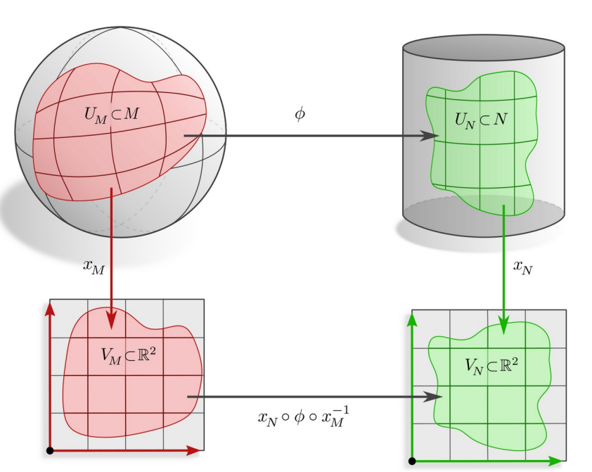

GDL 3: Manifolds
Topological Manifolds
Definition 1.1 (Topological Manifold) A topological space \(M\) is called a d-dimensional (topological) manifold if around every point \(p \in M\) there exists a neighborhood \(U \subset M\) and a homeomorphism
\[x: U \to x(U) := V \subseteq \mathbb{R}^d\]The tuple \((U,x)\) is called a chart of \(M\) and the components of $x_i$$ are called coordinates.
Atlas of a manifold \(M\) is a set of charts \(\mathcal{A} = \{(U^l, x^l)\}_{l \in L}\) such that \(\bigcup_{l \in L} U^l = M\).
The homeomorphisms \(x^B \circ (x^A)^{-1}\) are called transition maps.

Smooth Manifolds
We want to differentiate functions \(f: M \to \mathbb{R}\) on the manifold.
Define differentiation on \(M\) by pulling back functions via chart \(x^A\) to \(\mathbb{R}^d\).
\[\begin{equation} f \circ (x^A)^{-1}: V^A \to \mathbb{R} \end{equation}\]ensure consistency among charts (that is charts need to be smoothly compatible) i.e. \(x^B \circ (x^A)^{-1}\) is smooth.
We obtain a smooth manifold by adding an atlas with smooth transition maps.
Definition 1.2 (Smooth Atlas) An atlas \(\mathcal{A}\) is called smooth (differentiable) if the transition maps between any two overlapping charts are smooth (differentiable).
Definition 1.3 (Smooth Manifold) A smooth manifold is a topological manifold equipped with a smooth atlas.
Definition 1.4 (Smooth map) Let \(\phi: M \to N\) be a map between smooth map at \(p \in M\) if for some smooth charts \((U_M, x_M)\) and \((U_N,x_N)\) around \(p\) and \(\phi(p)\), the map \(x_N \circ \phi \circ x_M^{-1}\) is smooth in the usual sense on \(\mathbb{R}^d\)

Definition 1.5 (Smooth curve) A smooth curve on \(M\) is a smooth map \(\gamma: \mathbb{R} \to M\).
Definition 1.6 (Tangent space (informal)) The tangent space \(T_pM\) at \(p \in M\) is the vector space spanned by the tangent vectors \(\gamma'(0)\) of smooth curves \(\gamma: \mathbb{R} \to M\) with \(\gamma(0) = p\).
\[\begin{equation} T_pM := \{ \gamma'(0) \mid \gamma: \mathbb{R} \to M, \quad \gamma(0) = p, \quad \gamma \in \mathcal{C}^d, d \geq 1 \} \end{equation}\]Disjoint union of tangent spaces forms the tangent bundle \(TM\) of \(M\).
Despite tangent spaces being vector spaces, they do not have a canonical reference frame (basis), so we need to pick some frame to represent tangent vectors numerically - different choices possible!
The set of all reference frames form the frame bundle \(FM\) of \(M\).
A chart induces a frame field
Definition 1.7 (Diffeomorphism) Let \(\phi: M \to N\) be a bijective map between smooth manifolds. if both \(\phi\) and \(\phi^{-1}\) are smooth, then \(\phi\) is said to be a diffeomorphism. \(M \cong N\) if they are diffeomorphic.
\[\text{Diff}(M) := \{ \phi: M \to M \mid \phi \text{ is diffeomorphic} \}\]\(\text{Diff}(M)\) are the symmetries of a smooth manifold M - if we want isometries, we need to add a metric structure.
Riemmanian Manifolds
Riemmanian metric tensor fields endow smooth manifolds with notion of distance. The metric tensor field \(\eta\) is a smooth assignment of positive definite inner products
\[\begin{equation} \eta_p: T_pM \times T_pM \to \mathbb{R} \text{ s.t. } \eta_p(v,v) \geq 0 \end{equation}\]norms of tangent vectors are defined as usual: \(\|v\| := \sqrt{\eta_p(v,v)} \space \forall v \in T_pM\)
lengths of smooth curves \(\gamma: [a,b] \to M\) are defined by integrating their tangent vectors (“velocities”) along \(\gamma\):
\[\begin{equation} l_\gamma = \int_a^b \| \frac{d}{dt} \gamma(t) \| dt \end{equation}\]
the distance \(d_\eta(p,q)\) between two points \(p\) and \(q\) is the length of the shortest curve between them (geodesic):
\[\begin{align*} d_\eta: M \times M \to \mathbb{R}_{\geq 0} \\ d_\eta(p,q) := \inf \{ l_\gamma \mid \gamma \text{ is a piecewise smooth curve from p to q} \} \end{align*}\]isometries are distance preserving maps between Riemmanian manifolds:
Definition 1.8 (Isometry) An isometry \(\phi: M \to N\) for between Riemmanian manifolds \((M,\eta_M)\) and \((N,\eta_N)\) is a diffeomorphism such that \(\eta_N(\phi_*v, \phi_*w) = \eta_M(v,w)\) \(\forall v,w \in T_pM\) , where \(\phi_*\) is the pushforward of the metric tensor field.
the symmetries of a Riemmanian manifold form its isometry group
\[\text{Isom}(M) := \{ \phi: M \to N \mid \phi \text{ is an isometry} \}\]all metric derived properties (geodesics, curvature, Levi-Civita connection, …) are preserved by isometries.

The metric induces a (unique) Levi-Civita connection = “infinitisimal transport”
finite parallel transporters along paths \(\gamma\) follow by integration.
parallel transport is in general path dependent

transport between mesh faces “unfold, shift, fold back” - this is the “holonomy” of the connection.
the intrinsic (Riemann) curvature tensor measures the amount of rotation of a vector when transporting it in infiniesimal circle.
contracted (“index-averaged”) versions: Ricci/scalar/Gaussian curvature
for embedded manifolds , we also have several measures for extrinsic

curvature at a vertex of a 2d-mesh, corresponds to its angle defect

the Riemmanian exponential maps \(\exp_p: T_pM \to M\) send vectors \(v \in T_pM\) to points \(\exp_p(v) \in M\) by walking a distance \(\|v\|\) along the geodesic in direction of \(v\).
useful for Riemannian gradient descent
in general only locally injective the inverse is locally given by the Riemmanian logarithmic map :
\[\begin{equation} \log_p = \exp^{-1}_p: M \supseteq U_{p,\text{injective}} \to T_pM \end{equation}\]Fiber Bundles
Globally trivial bundles are spaces that can be written as a product:
\[E = M \times F\]M is manifold (base space) and F is the fiber.
globally trivial bundles are in particular locally trivial over a neighborhood \(U \subseteq M\)

general fiber bundles are locally trivializable, but not necessarily global products.

Fiber bundles \((E, M, \pi, F)\) are structures consisting of…
- E (total space)
- M (base space)
- F (fiber)
- a continuous surjective bundle projection map \(\pi: E \to M\)
such that aroundd every \(p \in M\) there exists a trivializing neighborhood \(U \subseteq M\) and a homeomorphism (local trivialization) \(\psi: \pi^{-1}(U) \to U \times F\) satisfying \(\text{proj}_1 \circ \psi = \pi\)
the global topological structure is recovered from an atlas of local trivializations. \(\mathcal{A} = \{ (U^I, \psi^I) \}_{I \in \mathcal{J}}\)
by gluing the trivializations together with transition maps
\[\begin{equation} \text{id} \times g^{BA} := \psi^{B} \circ (\psi^A)^{-1} : (U^A \cap U^B) \times F \to (U^A \cap U^B) \times F \end{equation}\]
The tangent spaces of a smooth manifold form the tangent bundle \((TM, M, \pi_{TM}, \mathbb{R}^d)\)
with total space \(TM := \bigcup_{p \in M} T_pM\) and projection map \(\pi_{TM}: TM \to M\) given by \(\pi_{TM}(v) = p\) for \(v \in T_pM\).
local trivializations \(\psi^A\) identify tangent spaces over \(U^A\) with \(\mathbb{R}^d\) \(\implies\) inducing reference frames on \(T_pM\) transition maps \(\psi^B \circ (\psi^A)^{-1}\) glue the fibers \(\mathbb{R}^d\) together over \(U^A \cap U^B\) via structure group elements.
additional structure on M allows to restrict to a G-atlas of trivializations with a reduced structure group G.
the frame bundle \((FM, M, \pi_{FM}, GL(d))\) is the bundle consisting of all reference frames of all tangent spaces
its fiber is the general linear group i.e. \(F_pM \cong_{\text{top}} GL(d)\)
G-structures correspond to sub-bundles of frames with fiber \(G \leq GL(d)\)
they are in 1-to-1 relation with G-atlases of TM.